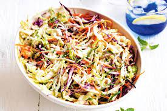

TEXAS COLESLAW

Description of Recipe:
Goes great with barbecues and picnics. For a more mild salad, use less green onions.
Ingredients:
- 1 cup mayonaisse
- 1 tablespoon lime juice
- 1 tablespoon ground cumin
- 1 teaspoon cayenne paper
- 1 teaspoon salt
- 1 tablespoon ground black pepper
- 1 medium head green cabbage, rinsed and very thinly sliced
- 1 large carrot, shredded
- 2 green onions sliced
- 2 radishes sliced
Steps:
- In a large bowl, whisk together the mayonnaise, lime juice, cumin, salt and pepper. Add the cabbage, carrot, green onions and radishes and stir until well-combined. Chill at least an hour before serving.